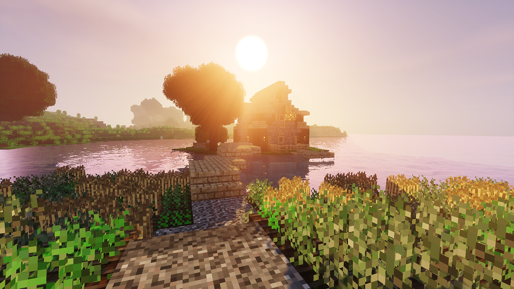

Minecraft es un juego sandbox creado por Mojang donde puedes explorar, construir y sobrevivir en un mundo de bloques.
Tipo: Ingeniería / Automatización
⚙️ Qué agrega
🎮 Qué lo hace divertido
Puedes construir fábricas completas dentro de Minecraft.
Ejemplos:
💻 PC: Media
📱 Celular: ❌ No disponible
Tipo: Aventura
⚙️ Qué agrega
🎮 Qué lo hace divertido
Tiene progresión como RPG: derrotas bosses y desbloqueas nuevas zonas.
💻 PC: Media
📱 Celular: ❌ No disponible
Tipo: Fantasía
Puedes criar dragones y volar con ellos.
💻 PC: Media-Alta
📱 Celular: Media
Tipo: Decoración
Permite construir casas realistas.
💻 PC: Baja
📱 Celular: Baja
Tipo: Caos / diversión
Un bloque que puede dar:
Nunca sabes qué va a pasar.
💻 PC: Baja
📱 Celular: Baja
Tipo: Destrucción
Puedes destruir montañas enteras.
💻 PC: Baja
📱 Celular: Baja
Tipo: Criaturas
Los combates se vuelven mucho más difíciles.
💻 PC: Media
📱 Celular: Media
Tipo: Habilidades
Puedes transformarte en mobs.
Cada mob tiene habilidades especiales.
💻 PC: Baja-Media
📱 Celular: Media (addons)
Tipo: Animales
Agrega más de 80 animales nuevos.
💻 PC: Baja
📱 Celular: Baja
Los shaders mejoran los gráficos del juego.
Ejemplos:
• BSL Shaders
• SEUS
• Complementary Shaders
Aquí puedes explicar qué agregaron en nuevas versiones del juego.
Aquí puedes poner noticias que publique Mojang en X o en otras redes.